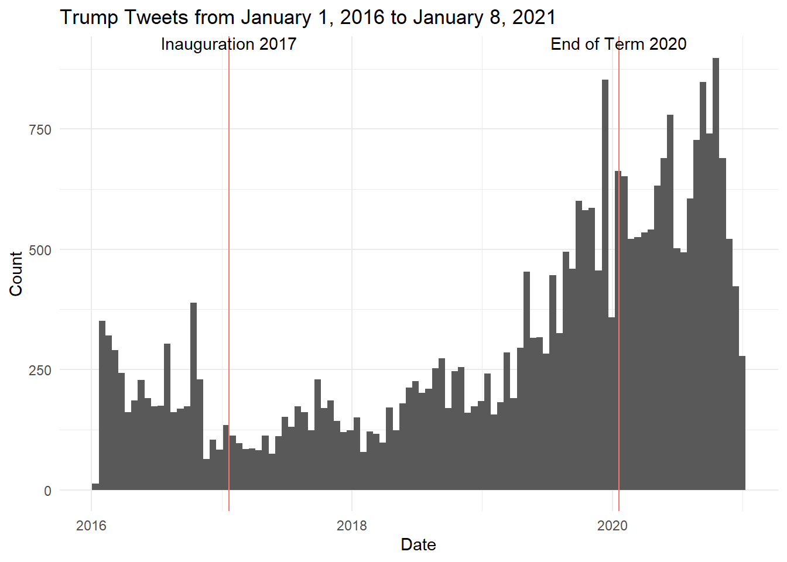
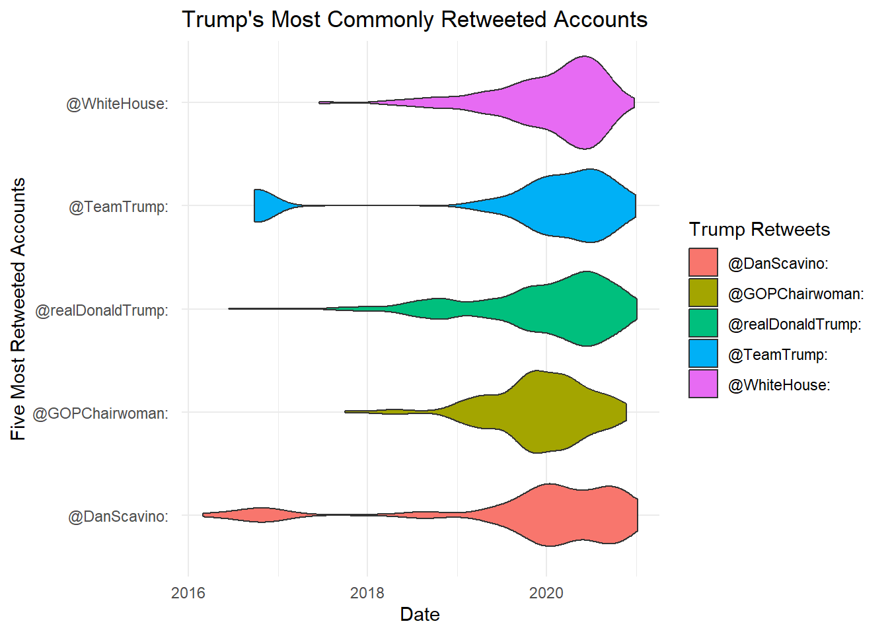
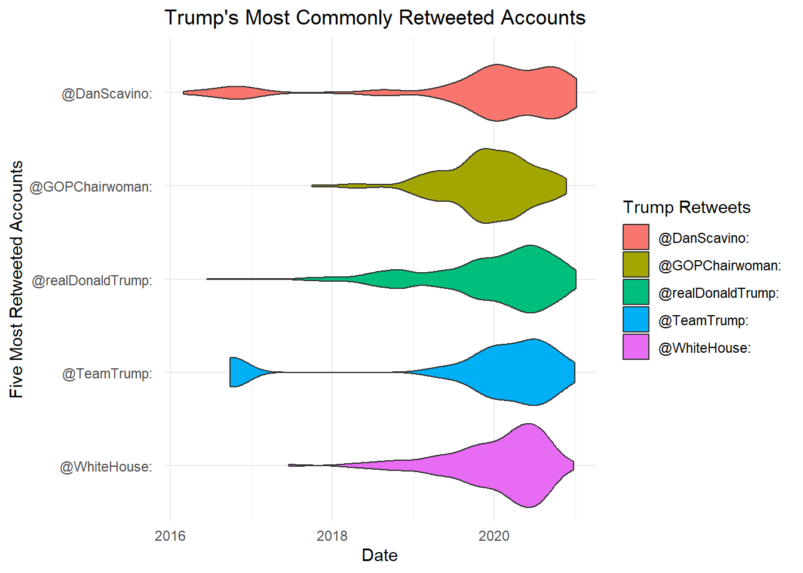

Strings and Regular Expressions
Donald Trump is very well known for his use of the Twitter platform to promote his campaign and his strong opinions. He was very vocal on the platform and is the only President to have been banned from Twitter.
Below is a graph of all Trump’s tweets from his account @realDonaldTrump starting on January 1, 2016, one year before he was inaugurated President and ending January 8, 2021, the day he was temporarily banned from Twitter. The vertical red lines represent the start and end of Trump’s presidency. As we can see, the amount of tweets greatly increases and stays high during and after the 2020 election season. There is also a relatively low number of tweets during the start of his presidency.
# A tibble: 6 × 5
year total_tweets total_capital_letters total_favorites total_retweets
<chr> <int> <int> <dbl> <dbl>
1 2016 3982 46751 71645843 25618233
2 2017 2598 30731 161523601 38051871
3 2018 3566 49598 234277534 57871171
4 2019 7813 100993 365992656 113768353
5 2020 12223 161083 729630178 233935942
6 2021 156 1840 21737052 6032036Above is the analytics of Trump’s tweets by year. Keeping in mind that the 2021 data includes only eight days, we observe that 2017 had the least amount of tweets and 2020 had the most. 2020 had the most capital letters, likes and retweets, which makes sense given that it is also the year with the most tweets. It’s clear that Trump became more active on twitter toward the end of his term and especially when promoting his campaign for re-election.
Next, I decided to look at the five accounts that Trump retweeted the most. I found that Trump most often retweeted tweets from his own account and his second most retweeted account was the White House. GOPChairwoman, DanScavino, and TeamTrump were the 3rd - 5th most retweeted accounts.
# A tibble: 5 × 2
# Groups: retweet [5]
retweet n
<chr> <int>
1 "@realDonaldTrump: " 966
2 "@WhiteHouse: " 438
3 "@GOPChairwoman: " 185
4 "@DanScavino: " 150
5 "@TeamTrump: " 139From this data, I then looked at the date and amount of retweets of Trump’s most commonly retweeted accounts.

Looking at each account individually,
@DanScavino’s tweets were most commonly retweeted by Trump in 2020/2021, which makes sense given that Scavino was the White House Deputy Chief of Staff of Communications for the Trump administration beginning in 2020.
The @GOPChairwoman account was ran by Ronna McDaniel who was the Republican National Committee chairwoman.
@realDonaldTrump is Trump’s personal account and he often retweeted his own tweets, especially leading up to and after the 2020 election.
@TeamTrump was used mostly during Trump’s campaign times, which explains why it was mostly retweeted during election season.
@WhiteHouse is the official account of the White House and we can see it was mostly retweeted during Trump’s time in office.
Below are Trump’s ten most commonly used two word phrases.
# A tibble: 10 × 2
two_words n
<chr> <int>
1 Fake News 406
2 President Trump 393
3 Joe Biden 312
4 GREAT AGAIN 281
5 United States 277
6 THANK YOU 270
7 MAKE AMERICA 267
8 Crooked Hillary 231
9 New York 205
10 The Democrats 203After seeing these phrases, I plotted them to see when these phrases appeared in Trump’s tweets.

The phrase “Crooked Hillary” was used most often during the 2017 election season, which makes sense given that Hillary Clinton was Trump’s main competitor for the 2017 election.
The phrases “Make America” and “Great Again” were used pretty evenly throughout Trump’s presidency, which is expected given that “Make America Great Again” was his main campaign slogan.
“Fake News”, “New York”, “President Trump”, “Thank you”, “The Democrats”, and “United States” were all used more often towards the end of Trump’s presidency and during the 2020 election.
“Joe Biden” was used heavily during the end 2020 and 2021, which was when Biden was running for office against Trump.